Explore Johannesburg
A Brief History
Johannesburg was founded in 1886 after gold was discovered on the Witwatersrand, drawing mining capital and migrant labour from across southern Africa. Victorian public buildings, Apartheid Museum narratives, and Soweto townships record industrial boom, segregation, and democratic transition in the highveld metropolis. Constitution Hill precincts and Maboneng creative districts extend mining-era skylines across the Witwatersrand.
Attractions Map
Top Sights & Activities
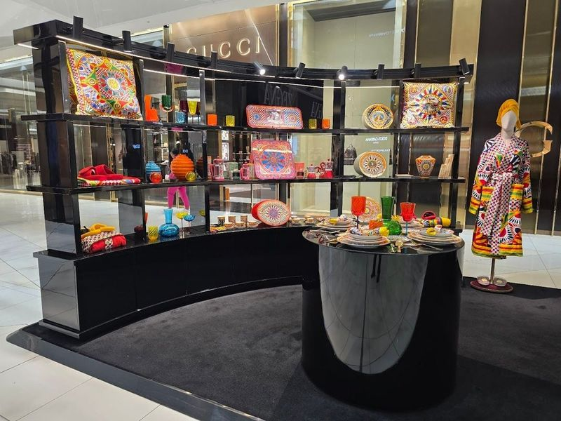
Sandton City
Sandton City is a luxurious shopping destination that has been around since 1973. It boasts a wide array of global luxury brands, gourmet restaurants, a cinema, and a kids' play area. The mall is home to prestigious designer boutiques and specialist shops, making it an ideal location for shoppers with diverse tastes.
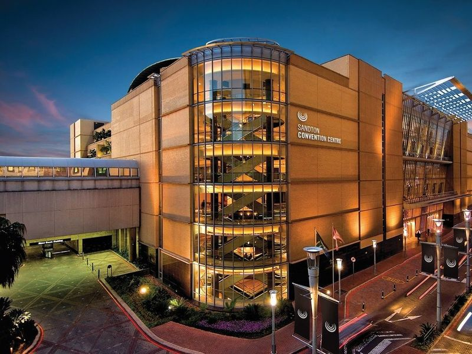
Sandton Convention Centre
Sandton Convention Centre (SCC) is a prestigious multi-event space located in the bustling business district of northern Johannesburg. It is surrounded by top shopping malls, hotels, and entertainment hubs. The venue hosts various events, exhibitions, and conferences and boasts advanced technology and contemporary African decor.
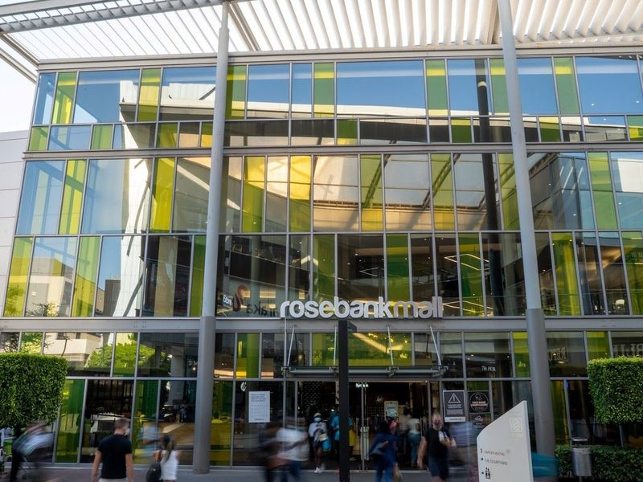
Rosebank Mall
Rosebank Mall is a 4-floor shopping center located in one of South Africa's trendiest business hubs. It offers a diverse range of fashion outlets, artisan markets, coffee shops, and a cinema. With approximately 150 shops, it provides a more streamlined and less crowded shopping experience compared to larger malls in Johannesburg. Easily accessible from major cities in Gauteng, the mall caters to both local and international visitors seeking shopping and entertainment options.
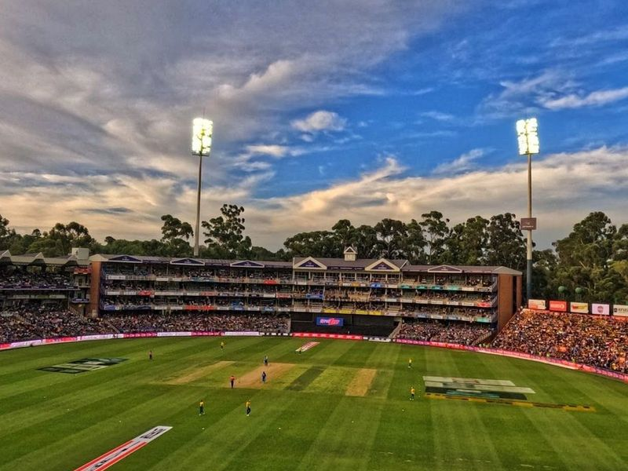
DP World Wanderers Stadium
The Imperial Wanderers Stadium is a massive cricket venue in Johannesburg that is regarded as in South Africa. It has a seating capacity of 34 000 and 182 suites, which are all leased out to various events. The stadium is also home to the South African cricket team and has been used for international matches such as the Cricket World Cup. It is clearly well maintained and features a wonderful prayer area carpeted with a women's section.
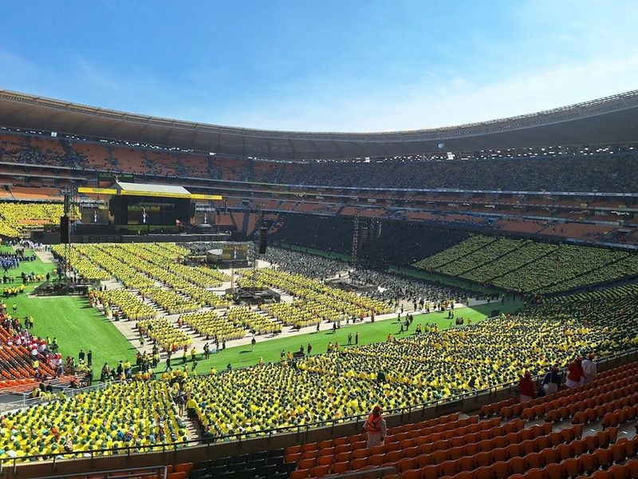
FNB Stadium
FNB Stadium, also known as Soccer City and The Calabash, is a renowned landmark in South Africa. This colossal stadium gained international acclaim as the main venue for the 2010 FIFA World Cup. Today, it continues to make history by hosting major concerts, state events, and sports competitions. With a seating capacity of up to 95,000 people, this architectural marvel has become a premier concert destination for both local and international artists.
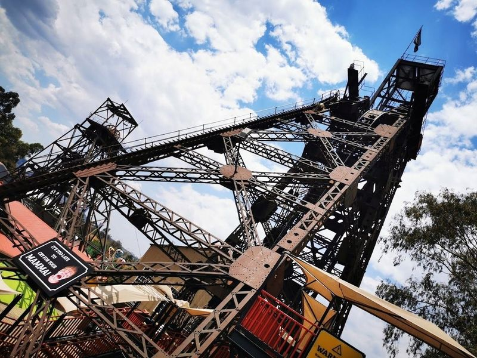
Gold Reef City Theme Park
Gold Reef City Theme Park is a captivating amusement park located on the grounds of a former gold mine. With over 30 exhilarating roller coasters and thrill rides, it offers an interactive journey through the history of gold mining and even features a 4D theater experience. Families can spend an entire day exploring the themed zones, enjoying live performances, and strolling through beautifully landscaped gardens.
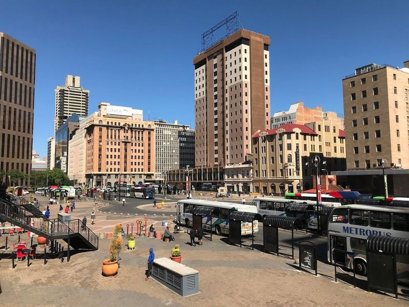
Gandhi Square Precinct
Gandhi Square is a recent development in Johannesburg that has been given a new look and name in honor of Mohandas (Mahatma) Gandhi. The square features pleasant shopping arcades and restaurants, as well as the bronze statue representing him as a young lawyer, gown flowing in the wind like a superhero.
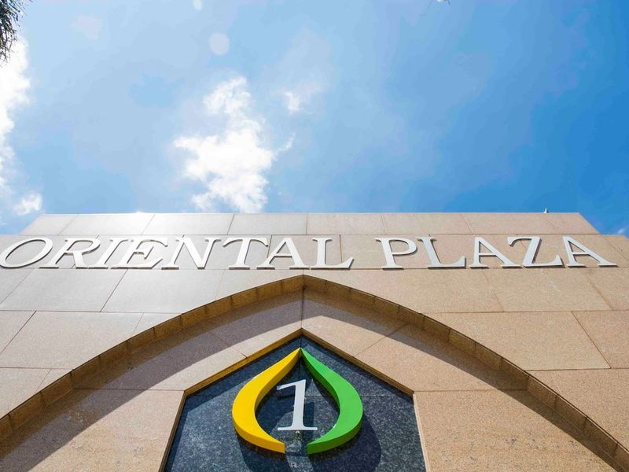
Oriental Plaza
Located on the outskirts of Johannesburg CBD, Oriental Plaza is a bustling indoor bazaar offering a wide array of goods at bargain prices. With 360 individually-owned stores, visitors can find everything from clothing and homeware to spices and designer brands. The unique open-air atmosphere and nonfixed prices make it a popular shopping destination for locals and visitors alike.
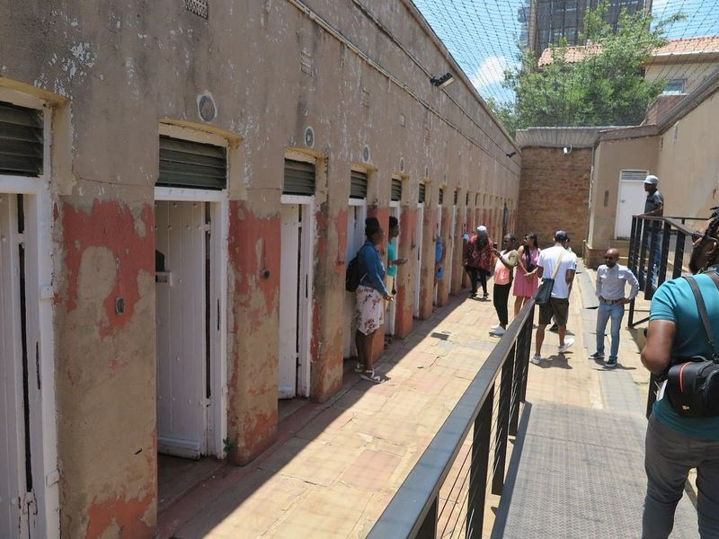
Constitution Hill Human Rights Precinct
Constitution Hill Human Rights Precinct in Johannesburg is a historically significant site that offers a deep and moving look into South Africa's journey to democracy and human rights. It comprises the Old Fort, Number Four Jail, Women's Jail, and the Awaiting Trial Block, which have been transformed into museums and heritage sites. The precinct sheds light on the country's struggles against apartheid while promoting reconciliation and justice.
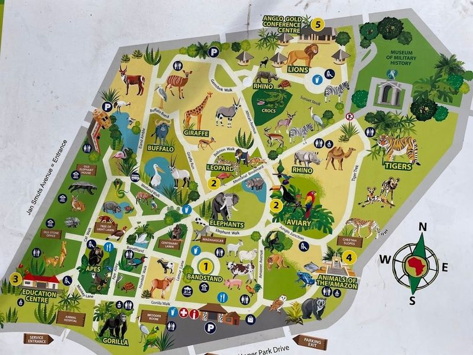
Johannesburg Zoo
The Johannesburg Zoo, spanning 55 hectares, is home to a diverse array of rare African species and hosts a successful white lion breeding program. It offers an opportunity to encounter South Africa's wildlife within the city limits. Visitors can explore the zoo's 200 acres and encounter the Big Five, endangered species like the white rhino and wattled crane, as well as record-holding animals such as the cheetah and Andean condor.
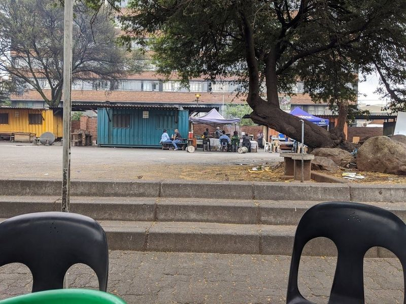
Kwa Mai Mai Traditional Market
Kwa Mai Mai Traditional Market, also known as the Place of Healers, is a historic market in Johannesburg with over 175 stalls run by traditional healers known as Sangomas. Here find a diverse range of items including traditional medicine, African artifacts, clothing, and animal skins. It offers an authentic African experience and insight into cultural practices. Visitors can also purchase unique souvenirs.
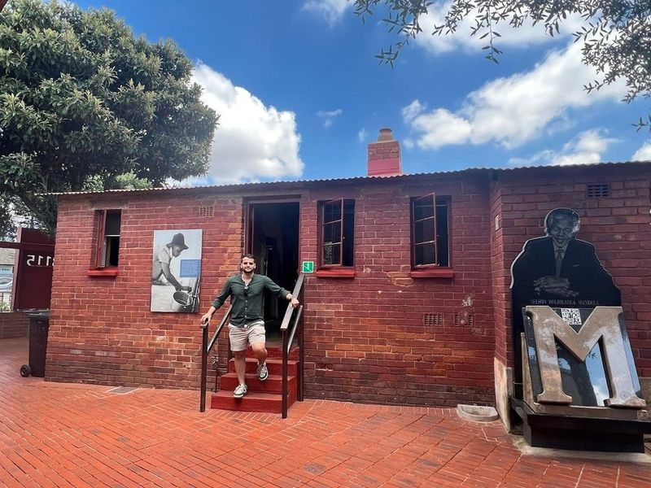
Mandela's House
Mandela's House, located at 8115 Orlando West in Johannesburg, was once the residence of Nelson Mandela and his family. The house has been transformed into a museum by the Soweto Heritage Trust to showcase the life and legacy of the revered former president. Visitors can explore exhibits featuring Mandela's personal belongings, photographs, and paintings.
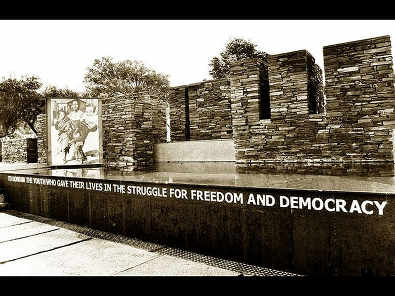
Hector Pieterson Memorial
Hector Pieterson Memorial is listed among principal sites for Johannesburg within South Africa. Municipal and regional heritage listings document its place in the historic centre and travellers routes through Johannesburg. Hector Pieterson Memorial is listed among principal sites for Johannesburg within South Africa.
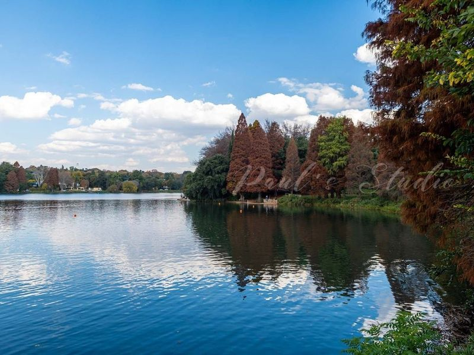
Johannesburg Botanical Gardens
Johannesburg Botanical Gardens is a sprawling 125-hectare park that offers a diverse range of gardens, making it an ideal destination for nature enthusiasts. The park boasts an impressive collection of trees, including rare and perennial varieties, providing visitors with a unique opportunity to explore the natural beauty of South Africa without leaving the city.
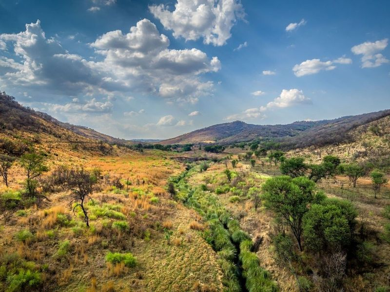
Klipriviersberg Nature Reserve
Klipriviersberg Nature Reserve, situated just 10 km from Johannesburg's city center, is the largest nature reserve in the area. The reserve offers hiking trails ranging from 3 km to 9 km, leading through grasslands and wooded hills where visitors can spot zebra, blesbok, and over 230 species of birds. The trails vary in difficulty, with some leading to hilltops while others follow the river on flatter terrain.

Klipriviersberg Municipal Nature Reserve
Klipriviersberg Municipal Nature Reserve is listed among principal sites for Johannesburg within South Africa. Municipal and regional heritage listings document its place in the historic centre and travellers routes through Johannesburg. Klipriviersberg Municipal Nature Reserve is listed among principal sites for Johannesburg within South Africa.